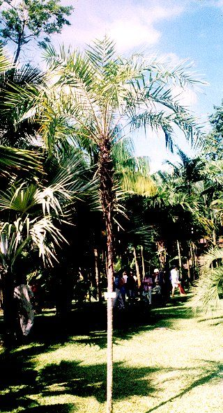

Phoenix paludosa
Roxb.
Taxonomic Details

----- Correct Name
----- Classification
----- Synonyms
----- Common Names
Other Biological Details
----- Habit and Habitat
----- Diagnostic Features
----- Reproductive Biology
---------- Breeding System
---------- Phenology
---------- Pollinators
---------- Seed Biology
----------Seed Germination
---------Cultivation
----- Major Pests and Diseases
Economic Potential and Uses
----- Parts Used
-----Uses
----- Harvesting Practices
----- Produce and Products
----- Chemistry
----- Processing Techniques
----- Other uses
----- Economic Potential to the Country
----- Export Potential
Miscellaneous Information
Literature
Taxonomic
Details
Correct Name
: Phoenix paludosa Roxb.
Family : Palmae
Synonyms :
Common Names :
English: Mangrove date palm
Bengali: Hital
Telugu: Hintalamu.
Misc: Oriya-Hital.
Back to Top
Other
Biological Details
HABIT & HABITAT
A handsome, palm, often with inclined
or soboli- ferous stems, up to 8m. in length and 9 cm. in diam., found in the
coastal swamps of West Bengal, Orissa -; Hind the Andamans ; it occurs gregariously,
forming inpenetrable thickets.
Availability :
Status :
Back to Top
DIAGNOSTIC
FEATURES
Leaves spreading, up to 3 m. 3; long:
pinnate
30-60 cm. long, whitish or farinose underneath; spadices c. 45 cm. long: male
flowers yellow, female greenish ; fruit an ovoid berry, c. 1.25 cm. Long black
purple when ripe.
Back to Top
REPRODUCTIVE BIOLOGY
Breeding System :
Phenology :
The flowering occurs during March - December.
Pollinators:
Seed Biology :
Seed Germination:
Cultivation:
Back to Top
MAJOR PESTS & DISEASES
Pests:
Diseases:
Back to Top
Economic
Potential and Uses
Parts used
Fruits, Leaves, Stems and Pith.
Uses
- The fruits are eaten
; they are reported to possess cooling and antiphlogistic properties.
- The pith
of the stem is also edible.
Harvesting Practices
Produce and Products
Ropes and Walking sticks.
Back to Top
Chemistry
Back to Top
Processing Techniques
Back to Top
Other Uses
-
The leaves are used for thatching and for making rough ropes, fences, etc. They
were tried for papermaking but pulp yield was low (25%).
- The leaves (tannin, <7%)
have been found to be unsuitable as a tanning material.
- The stems of smaller plants
are used as walking sticks; larger stems serve as rafters.
Back to Top
Economical
Potential to the country
Back to Top
Export Potential
Back to Top
Miscellaneous
Information
Back to Top
Literature
- Flora of Maharashtra state(Monocotyledones),B.D.Sharma, S.Karthikeyan
& N.P.Singh,1996,Library,Atree,Bangalore.
- http://www.plantapalm.com/vpe/photos/Species/phoenix_paludosa.htm
Back to Top